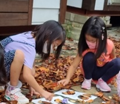

아이가 친구들을 잘 때려요. 친구들과 사이좋게 지내야 하고 신체에 터치하지 말라고 해도 소용없어요. 아이는 말로 하는 것보다 몸으로 부대끼는 행동을 선호하는데 순간적으로 발생하는 행동에 주변에 있던 친구들을 “왜 때리냐?”, “폭력했다” 며 불만을 나타내요. 아이는 의도적인는 공격행동도 아니고 충동적인 행동도 아닌데 걱정이 많습니다.
1. 원인
1) 부모양육 태도
부모가 엄격하게 아이를 다스리는 경우, 아이는 문제 상황에서 공격적인 행동을 선택할 수 있습니다. 부모의 체벌로부터 자신을 방어하기 위해 다른 아이를 때리는 경우가 있습니다. 또한, 과보호적인 부모는 아이에게 모든 것을 허용하고, 자기를 중심으로 모든 것을 뒤집어주는 경향이 있습니다. 이런 아이는 친구를 때려서 자기의 욕구를 충족시키려 할 수 있습니다.
2) 관심을 끌기 위한 수단
아이가 부모나 교사로부터 충분한 관심을 받지 못하면, 공격적인 행동을 통해 주의를 끌려고 할 수 있습니다. 때리거나 다른 아이를 공격함으로써 특별한 관심과 주목받으려는 노력일 수 있습니다.
3) 매체의 영향
아이들은 폭력적인 매체(티비, 비디오 게임 등)에 노출될 때, 이러한 매체에서 본 행동을 모방할 수 있습니다. 폭력적인 콘텐츠가 아이들의 사고와 행동에 영향을 미칠 수 있습니다. 아이들은 자극적인 환경에서 더 활동적이고 충동적으로 행동하는 경향이 있습니다. 이들은 갈등이나 의견 충돌 시 더 쉽게 폭력적인 행동을 선택할 수 있습니다.
4) 사회적 미숙성
아이들은 발달과정에서 사회적 미숙성을 겪을 수 있으며, 다른 친구와의 관계를 구축하고 유지하는 데 어려움을 겪을 수 있습니다. 이로 인해 내재된 갈등이나 문제 상황을 적절하게 처리하게 어려워서 폭력적인 행동을 선택할 수 있습니다.

2. 지도방법
1) 사전 예방과 개입
아이가 다른 친구를 때리기 전에 미리 예방하고 개입하는 것이 중요합니다. 부모나 교사는 놀이하는 과정에서 아이를 지켜보며 언제 아이가 때릴 가능성이 있는지 파악하고, 그럴 때 사전에 미리 개입하여 사태를 예방합니다.
2) 대안 행동 가르치기
아이에게 다른 방법을 가르치고 예비해야 합니다. 사회생활을 하다보면 불만이나 갈등이 발생한다. 친구를 때리는 대신, 문제를 다양하게 해결할 수 있도록 하거나 의견 충돌을 신체로 하기보다 대화로 해결할 수 있는 방법을
연습하도록 도와줍니다.
3) 부모의 모범 제시
부모와 교사는 모범이 되어야 합니다. 성장하는 과정에 있으므로 신체적 힘과 폭력 대신 상호작용할 수 있는 대화와 타협을 통해 문제를 해결하는 모범을 제시하여 부모의 행동을 본받도록 배려하고 격려합니다.
4) 타임아웃 적용
아이가 다른 친구를 때렸을 때, 즉시 타임아웃을 적용합니다. 타임아웃은 아이를 일시적으로 다른 환경으로 이동시키고, 아이에게 자신의 행동을 반성할 시간을 주는 것입니다. 이때 타임아웃 시간이 너무 길지 않도록 할 것이며, 장소는 아이에게 적절한 장소로 정해야 합니다.
5) 칭찬과 긍정적 피드백
아이가 바람직한 사회적 행동을 할 때 즉각적으로 칭찬하고 긍정적 피드백을 제공합니다. 이를 통해 아이는 사회적 관계에서 바람직한 행동을 강화하고 성취감을 얻을 수 있습니다.
6) 매체 관리
폭력적인 매체에 노출을 줄여줍니다. 부모는 아이가 시청하거나 게임을 하는 콘텐츠를 선택적으로 관리하고, 폭력적인 콘텐츠를 피하도록 유도합니다.
7) 인지적 개입과 이해
아이의 마음을 이해하고 그들의 감정과 생각을 듣는 것이 중요합니다. 아이의 인지 발달을 지원하고, 갈등의 원인을 파악하여 해결 방법 등 문제 해결 능력 강화시켜야 합니다.
8) 지속적인 관찰과 평가
아이의 행동을 지속적으로 관찰하고 평가합니다. 어떤 상황에서 특히 폭력적인 행동을 보이는지 파악하고, 지도 방법을 조절하여 개선시키는 것이 중요합니다.
9) 협력과 지원
부모, 교사, 학교, 전문가와 협력하여 아이를 지원하는 네트워크를 구축합니다. 필요한 경우 전문가의 도움을 받아 아이의 행동을 관리하고 개선하는데 도움을 받습니다.
3. 나가면서
이와 같이 아이가 다른 친구를 때리는 원인은 다양하며, 부모양육, 관심, 매체 영향, 자극적인 환경, 사회적 미숙성 등 영향이 있습니다. 이러한 원인을 이해하고 적절한 지도와 관리를 통해 아이의 공격적인 행동을 예방하고 관리하는 것이 중요합니다. 친구들을 잘 때리는 아이를 지도할 때는 예방, 대안 가르치기, 모범 제시, 타임아웃, 칭찬, 문제 해결 능력 강화, 매체 관리, 인지적 개입과 이해, 지속적인 관찰과 평가, 협력과 지원을 통합적으로 활용하여 아이의 행동을 관리하고 성장과 발전을 도모해야 합니다.
참고자료
김영애, 선애순, 정효정(2018). 영유아발달. 양서원
박성연(2010). 아동발달. 교문사.
박순길,권순황,김현진,선애순,한재금(2017). 아동상담, 양서원.
박순길, 김동례, 선애순 공저(2021), 영유아생활지도 및 상담. 공동체
2022.08.12 - [분류 전체보기] - 공격 - 때리고, 빼앗고, 건드리는 행동 지도 방법
공격 - 때리고, 빼앗고, 건드리는 행동 지도 방법
아이의 공격적, 충동적인 행동은 사회성 발달의 과정 아이들은 놀면서 친구와 갈등이 생기거나 의견 충돌이 발생하면 주변의 다른 아이를 건드리고 때리고 자기 마음대로 하려고 한다. 즉, 다른
think-sis.co.kr